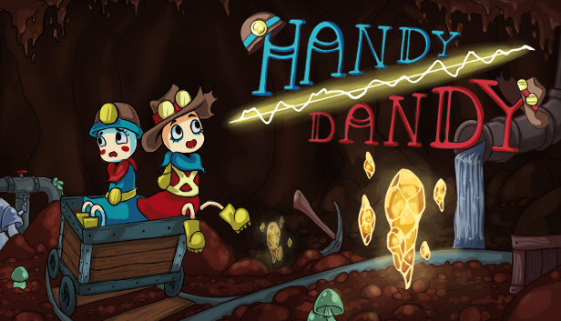

Handy Dandy
 Steam Page GitHubHandy Dandy is a cooperative puzzle platformer for two players. It was originally created as a semester project in 2019 and released on Steam in 2020. (It's free so go ahead and check it out!!)
The two cave adventurer Handy and Dandy have to solve puzzles by aligning the dimensional rift that seperates them with the crystals on screen. For that they have to help each other through their individual but overlapping level layouts.
As the lead programmer of the team I was responsible for implementing the game systems including platformer movement, npc behavior and game logic. I was also part of the design process for the game mechanics and did some of the level designs.
Game Mechanics
 Handy Dandy has only a few and also simple systems, which the entire game is build upon.
The characters themselves are pretty much the most basic platformer characters imaginable.
They only listen to three inputs: Left, Right and Jump.
We decided to use the rigidbody physics system of Unity, as we wanted the players to be able to influence each other in a straight forward and easily understandable way.
With that the players can help each other through the levels by using the other character as a platform.
Handy Dandy has only a few and also simple systems, which the entire game is build upon.
The characters themselves are pretty much the most basic platformer characters imaginable.
They only listen to three inputs: Left, Right and Jump.
We decided to use the rigidbody physics system of Unity, as we wanted the players to be able to influence each other in a straight forward and easily understandable way.
With that the players can help each other through the levels by using the other character as a platform.
A bit more tricky is how the levels of handy dandy work.
Each character has their own layout which are layered over each other and they only collide with the objects in 'their dimension'.
The splitscreen effect gets achieved through a mask that is attached to the barrier which always stays in the middle between the characters.
At later stages in the game minecarts and little moles are introduced, which both allow for more interesting level designs by having moving/movable crystals.
Programming Learnings
As it was one of the first games I worked on during my studies, it contained a lot of first times for me. Like working with event systems, figuring out controls for multiplayer games, serialization of game data or the movement of the characters. And while Handy Dandy is still very rough and at times barely functional in it's different features, it still came together as a finished product that a lot of people enjoyed and that is really important to me.